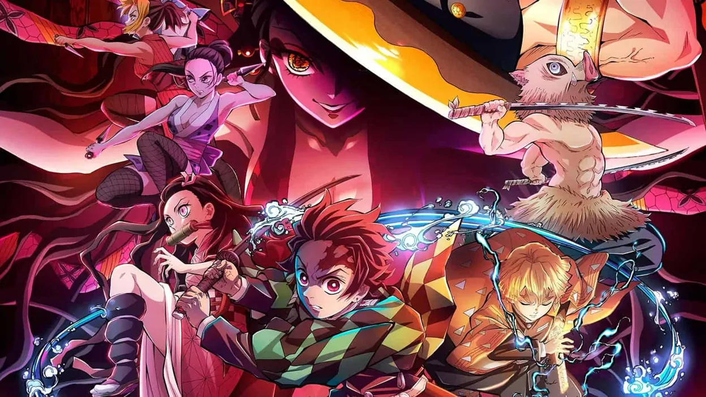

Reviva as Batalhas Épicas! Top 5 das Lutas Mais Emocionantes
Prepare-se para uma jornada repleta de adrenalina enquanto revisitamos as cinco batalhas mais emocionantes e bem coreografadas de "Kimetsu no Yaiba". De confrontos contra demônios poderosos a duelos entre os próprios Caçadores de Demônios, cada momento é uma prova de coragem, habilidade e determinação!
Tanjiro Kamado vs. Rui

Contexto: Esta batalha ocorre durante o arco da Mansão das Aranhas, quando Tanjiro e Nezuko enfrentam o Demônio Aranha, Rui, que busca criar uma "família" de demônios. Personagens Envolvidos: Tanjiro Kamado, Rui. Estratégias Utilizadas: Tanjiro precisa superar a força sobre-humana de Rui e sua teia mortal para proteger sua irmã e derrotar o demônio. Resultado: Apesar dos ferimentos graves, Tanjiro demonstra sua determinação e habilidade, encontrando uma brecha na defesa de Rui e o derrotando com uma técnica poderosa da Respiração da Água.
Zenitsu Agatsuma vs. Kaigaku

Contexto: Durante o Arco do Trem Infinito, Zenitsu enfrenta seu antigo colega de treinamento, Kaigaku, que se tornou um traidor e se aliou aos demônios. Personagens Envolvidos: Zenitsu Agatsuma, Kaigaku. Estratégias Utilizadas: Zenitsu precisa superar a traição de seu amigo e enfrentar suas próprias inseguranças para proteger seus companheiros e provar seu valor como Caçador de Demônios.. Resultado: Mesmo enfrentando um oponente habilidoso, Zenitsu encontra a coragem dentro de si mesmo e derrota Kaigaku, demonstrando seu crescimento como guerreiro.
Inosuke Hashibira & Tanjiro Kamado vs. Enmu

Contexto: Durante o Arco do Trem Infinito, Inosuke e Tanjiro enfrentam Enmu, um dos demônios responsáveis pelo ataque ao trem. Personagens Envolvidos: Inosuke Hashibira, Tanjiro Kamado, Enmu. Estratégias Utilizadas: Inosuke e Tanjiro precisam combinar suas habilidades e trabalhar em equipe para enfrentar as habilidades ilusórias de Enmu e proteger os passageiros do trem. Resultado:Com coragem e determinação, Inosuke e Tanjiro conseguem superar as ilusões de Enmu e derrotá-lo, garantindo a segurança dos passageiros.
Kyojuro Rengoku vs. Akaza

Contexto: Durante o Arco do Trem Infinito, Kyojuro Rengoku, o Pilar das Chamas, enfrenta Akaza, um dos Doze Kizuki, em uma batalha que coloca em jogo não apenas suas vidas, mas também o futuro da humanidade. Personagens Envolvidos: Kyojuro Rengoku, Akaza. Estratégias Utilizadas: Rengoku emprega suas habilidades formidáveis na Respiração do Fogo para enfrentar Akaza, um adversário ágil e implacável que representa uma ameaça mortal para todos a bordo do Trem Infinito. Resultado: Apesar da bravura e habilidade de Rengoku, a luta é intensa e brutal, com ambos os combatentes trocando golpes devastadores. No entanto, Rengoku demonstra sua dedicação inabalável à sua missão como Caçador de Demônios e enfrenta Akaza com determinação implacável, deixando uma impressão duradoura de sua coragem e sacrifício.
Tengen Uzui vs. Gyuutarou

Contexto: Durante o Arco do Distrito da Luz Vermelha, Tengen Uzui enfrenta Gyuutarou, um dos Demônios da Lua, enquanto busca resgatar suas esposas. Personagens Envolvidos:Tengen Uzui, Gyuutarou. Estratégias Utilizadas: Tengen precisa usar sua astúcia e habilidades de combate para enfrentar Gyuutarou, um adversário habilidoso e imprevisível. Resultado: Apesar dos desafios apresentados por Gyuutarou, Tengen demonstra sua habilidade e determinação, derrotando-o e garantindo o resgate de suas esposas.